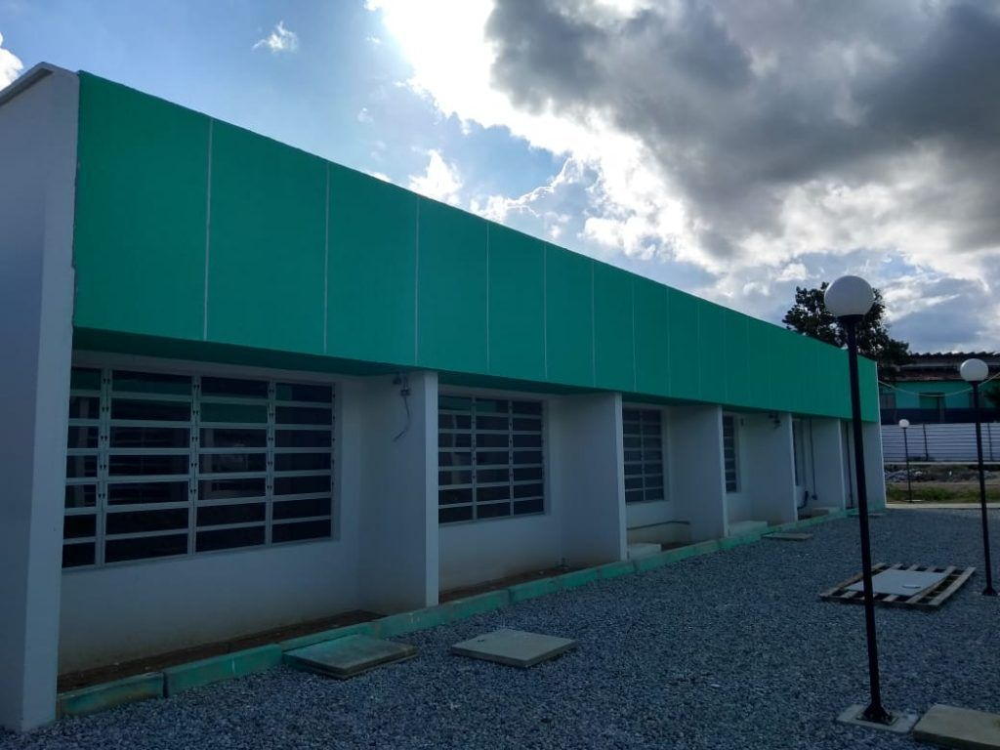

SOBRE
O que é Engenharia de Software?
Engenharia de Software é a disciplina que combina habilidades técnicas, criatividade e gerenciamento de projetos para projetar, desenvolver e manter sistemas de software complexos e confiáveis. É a força motriz por trás de aplicativos e sistemas que usamos todos os dias, desde aplicativos de smartphone até sistemas de controle de tráfego aéreo.
Estrutura
Nossa infraestrutura inclui um moderno bloco de engenharia, equipado com laboratórios de última geração, criados para proporcionar um ambiente de aprendizado prático e estimulante. Temos o compromisso de oferecer aos nossos estudantes as melhores condições para o desenvolvimento de suas habilidades em Engenharia de Software.

Bloco de Engenharia de Software

Laboratório 01

Laboratório 02

Lab. Inclusão Digital

Laboratório 04

Lab. Moura Tech 01

Lab. Moura Tech 02
Perfil Profissional
No IFPE - Belo Jardim, buscamos formar profissionais de Engenharia de Software altamente qualificados. Nossos alunos adquirem competências técnicas sólidas, capacidade de trabalho em equipe, habilidades de comunicação e a mentalidade necessária para enfrentar os desafios do setor de tecnologia da informação. Nossa abordagem prática e orientada para o mercado de trabalho prepara nossos graduados para atuarem em diversas áreas, desde desenvolvimento de software até gerenciamento de projetos. Abaixo você pode acessar alguns documentos importantes.
Documentos Básicos
Aqui, você encontrará links para documentos fundamentais do curso, como o Projeto Pedagógico de Curso (PPC), a Matriz Curricular e outros documentos relevantes. Esses recursos são essenciais para compreender a estrutura do curso, os requisitos de graduação e as políticas acadêmicas que guiam nossa oferta educacional. Acesse os documentos para obter informações detalhadas sobre nosso programa de Engenharia de Software.